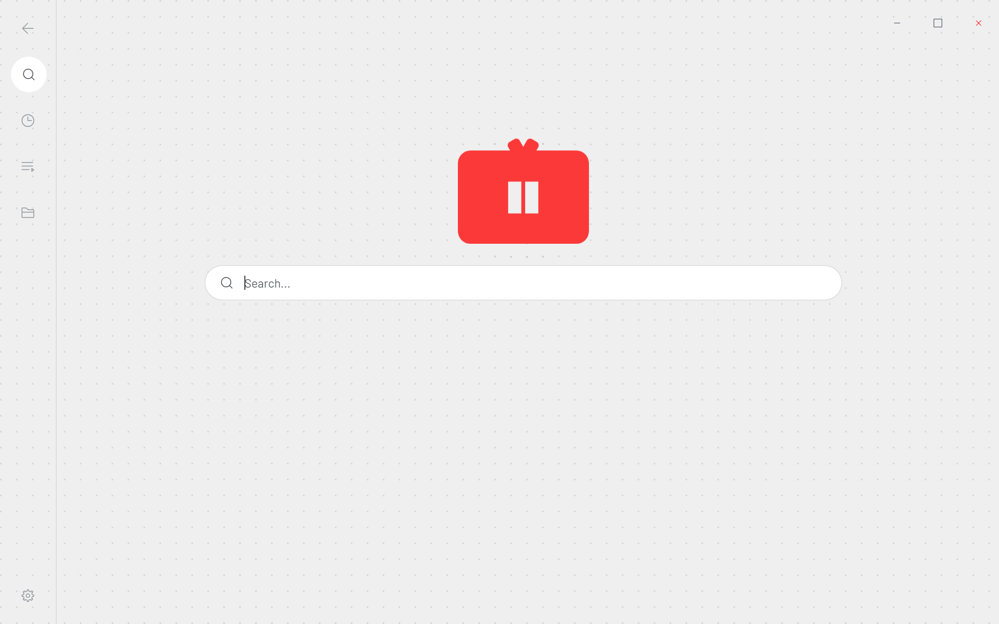
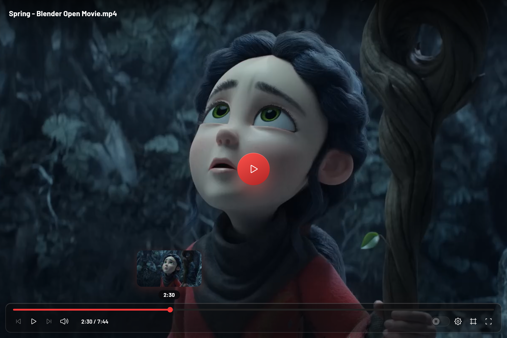
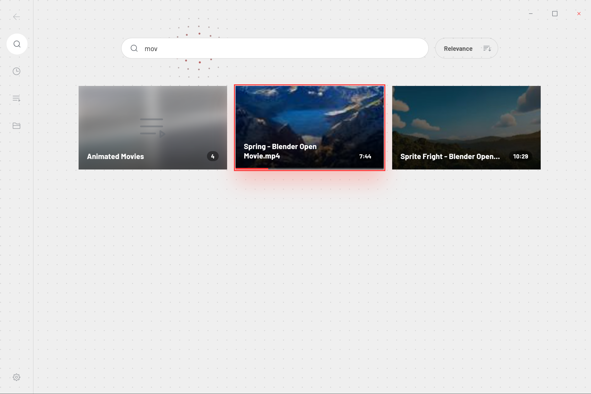
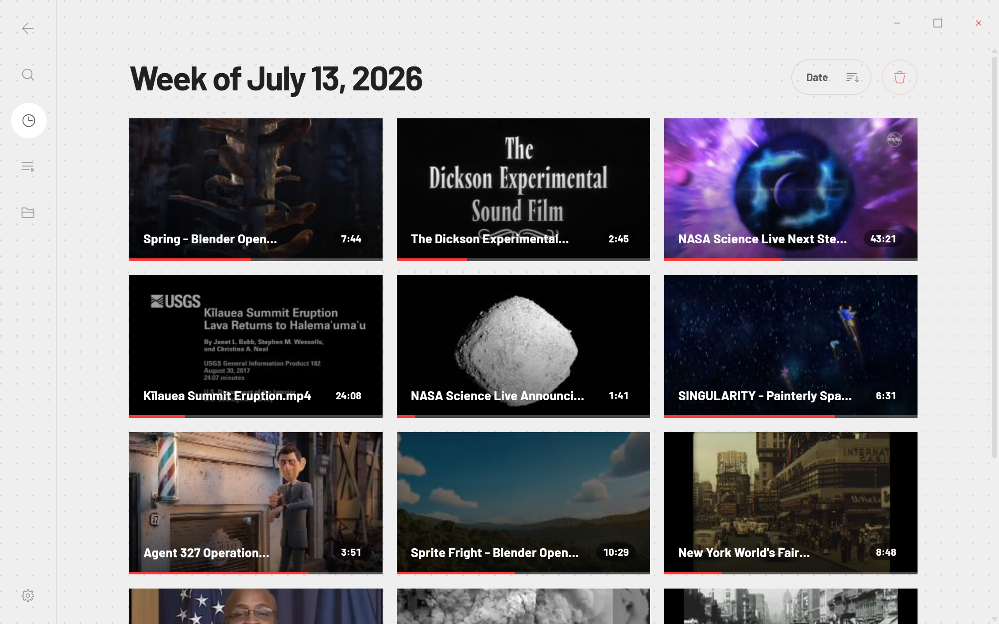
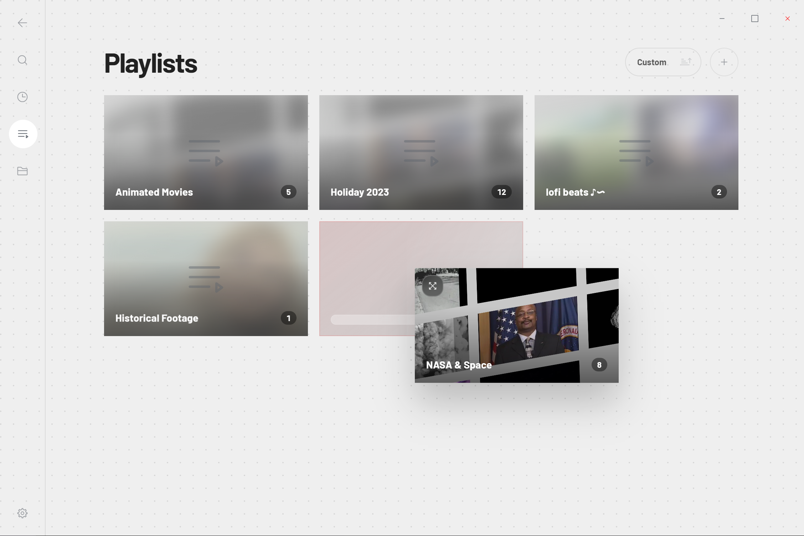
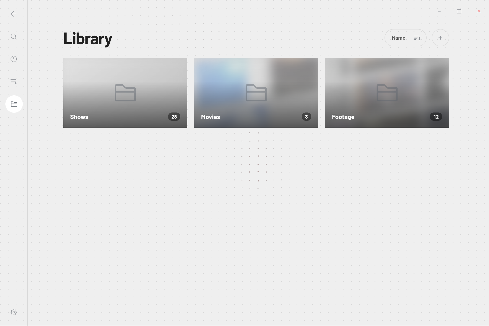
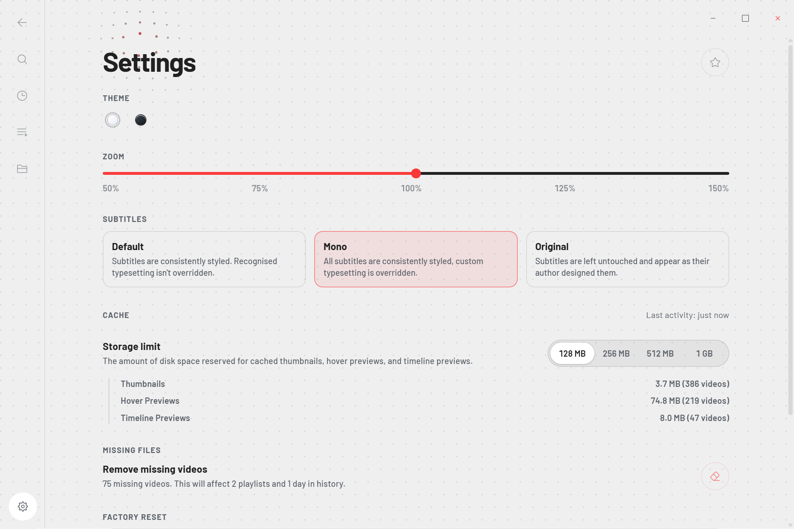
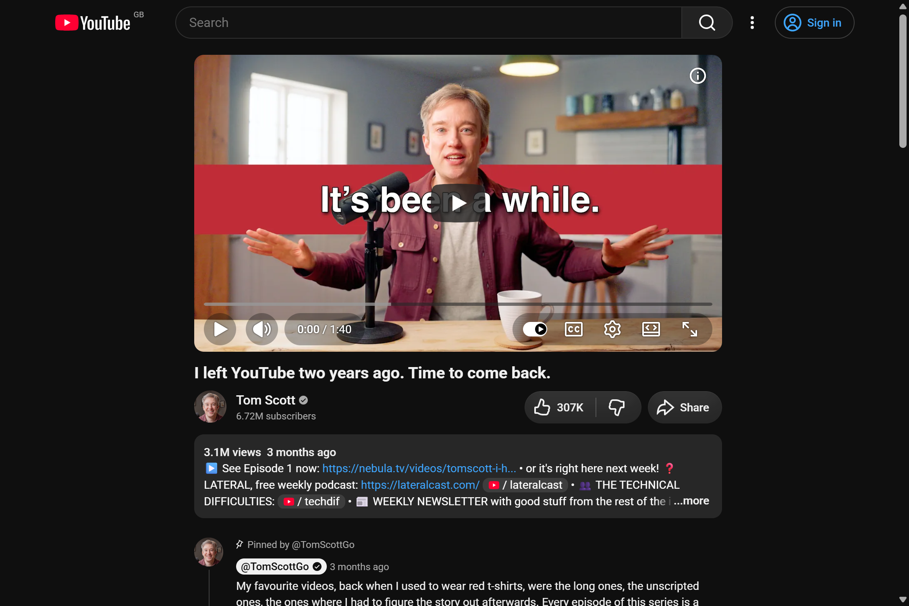
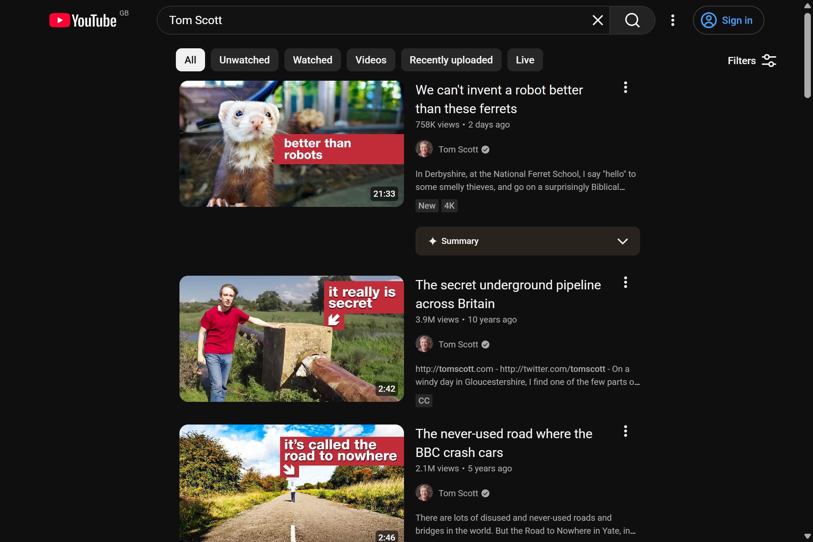
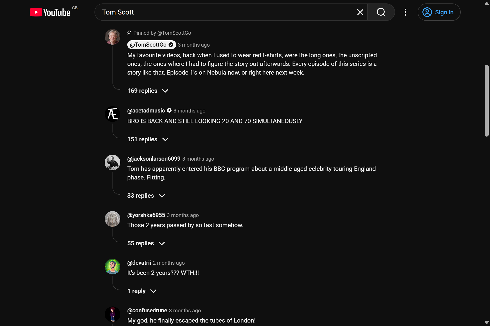

Distraction-free software.
Mono for Desktop
Your own videos, in a familiar, searchable library. Just press play.






Mono for YouTube
YouTube, stripped back. No recommendations, no clutter, no dark patterns.


